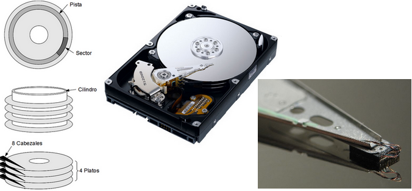
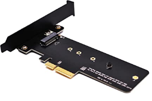
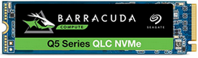
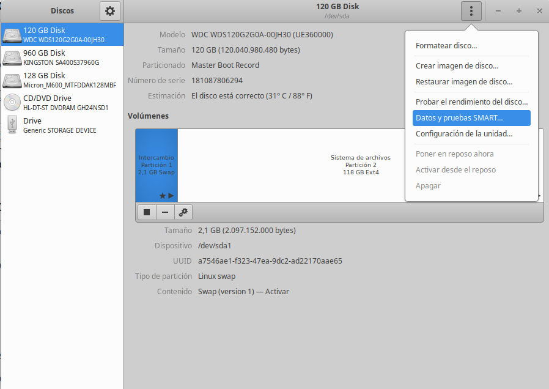
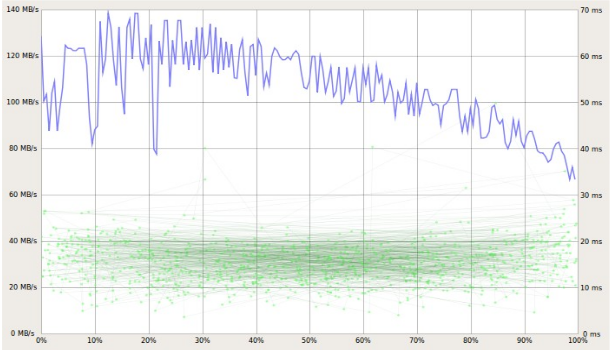
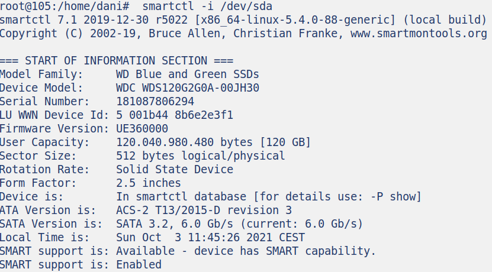
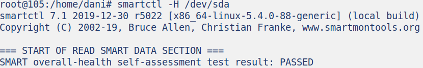
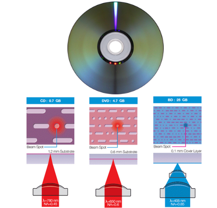

Dispositivos de almacenamiento#
Disco duro#
El disco rígido (hdd) hard disk drive, es el componente utilizado para almacenar los datos de manera permanente. El disco no está compuesto por un solo disco, sino por varios discos rígidos apilados muy juntos entre sí y llamados platos.
Los cabezales de lectura están ubicados a ambos lados de los platos. Estos cabezales son electroimanes que suben y bajan para leer la información o bien escribirla. El mecanismo completo de precisión se encuentra dentro de una caja totalmente hermética, debido a que la más mínima partícula puede degradar la superficie del disco.
Los cabezales comienzan a escribir datos comenzando desde el borde del disco (pista 0) y avanzando hacia el centro. Los datos se organizan en círculos concéntricos denominados «pistas», creadas por un formateo de bajo nivel.
Para leer, los cabezales terminan en una espira, cuando los platos giran se genera un campo magnético debido al spin, esto induce una intensidad en la espira, dependiendo del signo es 0 o 1. Para escribir se hace pasar una corriente por la espira que induce un campo magnético que a su vez induce una polarización magnética, dependiendo del signo de la corriente escribiremos 0 o 1.
Propiedades de los discos#
La caché de disco: (Disk cache o Cache buffer en inglés) es una porción de memoria RAM asociada a un disco con la utilidad de almacenar los datos recientemente leídos y por lo tanto agilizar la carga de los mismos en caso de que estos vuelvan a ser solicitados
Tamaño : 2,5 pulgadas ~7 x 10 cm o 3,5 pulgadas ~ 10 x 15 cm
Capacidad: Cantidad de datos que pueden almacenarse en un disco rígido.
Tasa de transferencia: Cantidad de datos que pueden leerse o escribirse desde el disco por unidad de tiempo. Se expresa en bits por segundo.
Velocidad de rotación: La velocidad a la cual giran los platos. Se expresa en revoluciones por minuto (rpm, su acrónimo en inglés). Las velocidades de los discos rígidos se encuentran en el orden de 7200 a 15000 rpm.
Latencia (también llamada demora de rotación): El lapso de tiempo que transcurre entre el momento en que el disco encuentra la pista y el momento en que encuentra los datos.
Interfaz: Se refiere a las conexiones utilizadas por el disco rígido. Las principales interfaces del disco rígido son:
IDE/ATA (PATA)
SATA


SAS (Serial Attached SCSI)

Existen carcasas externas que se utilizan para conectar discos rígidos con puertos USB o FireWire.
mSATA, La interfaz mSATA, también conocida como mini-SATA, apareció brevemente durante una generación de placas base y portátiles. Los dispositivos SSD mSATA siguen la especificación SATA, por lo que ofrecen un rendimiento máximo teórico de 600MB/s
El sector de arranque (MBR, Master Boot Record) es el primer sector de todo disco duro (cabeza 0, cilindro 0, sector 1). En él se almacena la tabla de particiones y un pequeño programa master de inicialización, llamado también Master Boot. Este programa es el encargado de leer la tabla de particiones y ceder el control al sector de arranque de la partición activa.
Discos de estado sólido#
Los discos duros SSD utilizan memoria flash (similables a las utilizadas en la RAM), pero a diferencia de ellas están basada en puertas NAND que no borran los datos cada vez que dejan de recibir corriente.
Los SSD no pueden sobrescribir directamente los datos en páginas individuales. Solo pueden escribir datos en páginas vacías de un bloque.
Un SSD completamente nuevo está cargado completamente de bloques con páginas en blanco. Cuando recibe datos nuevos en la SSD se escriben a velocidades vertiginosas. Sin embargo, a medida que se escriben más y más datos, las páginas en blanco se agotan y la unidad se queda con páginas aleatorias sin usar diseminadas por todos los bloques, como consecuencia, uno de los inconvenientes teóricos es que la memoria flash solo puede mantener un número finito de escrituras antes de finalizar su vida útil. Cuando se usa una SSD, las cargas eléctricas dentro de cada una de sus celdas de datos deben reiniciarse periódicamente. Desafortunadamente, la resistencia eléctrica de cada celda aumenta ligeramente con cada restablecimiento, lo que aumenta el voltaje necesario para escribir en esa celda. Eventualmente, el voltaje requerido llega a ser tan alto que la celda particular se vuelve imposible de escribir.
Esto no quiere decir que una SSD obligatoriamente dure menos que un disco duro. Aunque los bloques de memoria en un SSD tienen un número limitado de operaciones de escritura, las nuevas generaciones han mejorado muchísimo en fiabilidad. Todas las SSD incluyen células de memoria adicionales libres para cuando las otras fallen no perder capacidad, reasignando sectores dañados.
TBW o Total terabytes written, es la cantidad de terabytes que podrían ser escritos en el disco duro durante toda su vida útil, por ejemplo un SSD Crucial MX500 de 1 TB de capacidad. Según el fabricante, este dispositivo soporta 365 TBW y tiene una garantía de cinco años, así que según esta fórmula tendríamos que su durabilidad es de (365TBW/365días) 1TB escritos al día todos los días durante 1 año.

Interface#
PCIe
M.2
SATA
Thunderbolt

USB

Utilidades#
La tecnología SMART (siglas de Self Monitoring Analysis and Reporting Technology), consiste en la capacidad de detección de fallos del disco duro. 1La detección con anticipación de los fallos en la superficie permite al usuario el poder realizar una copia de su contenido, o reemplazar el disco, antes de que se produzca una pérdida de datos irrecuperable.
Este tipo de tecnología tiene que ser compatible con el BIOS del equipo, estar activada y además que el propio disco duro sea compatible.
Podemos hacer las pruebas de velocidad y del smart con gnome-disk-utility
 También podemos utilizar (smartctl and smartd) Para conocer el modelo de disco duro, y saber si soporta SMART ejecutamos: smartctl -i /dev/sda
En el caso de que el soporte SMART este deshabilitado lo intentamos habilitar: smartctl -s on /dev/sda Para chequear el estado del SMART ejecutamos: smartctl -H /dev/sda
Con la técnología Load/Unload cada vez más extendida, sobre todo en discos duros de portátil. Consiste en que el cabezal de lectura/escritura, en vez de estar permanentemente volando sobre el disco, se aparca frecuentemente, lo que teóricamente permite una mayor duración del disco, menor consumo y mayor protección contra golpes. En Load_Cycle_Count vemos los ciclos que lleva el disco utilizado. Para ver este y otros atributos, como por ejemplo la temperatura ejecutamos: smartctl -a /dev/sda
Otros comandos útiles:
badblocks -s -v /dev/sda -o salida.dat para saber si el disco duro tiene sectores defectuosos
hdparm /dev/sda para conocer el numero de sectores que tiene nuestros discos duros
hdparm -t /dev/sda Para conocer la velocidad de transferencia (buffered)
TestDisk: Nos permite hacer recuperación de particiones y sectores de arranquepara distintos formatos

PhotoRec : Es un software de recuperación de datos, diseñado para recuperar archivos perdidos, incluyendo vídeos, documentos, archivos de discos duros, CD-ROM, y las imágenes borradas de las tarjetas de memorias de las cámara digitales (de ahí el nombre). PhotoRec ignora el sistema de archivos, y hace una búsqueda profunda de los datos, funcionando incluso si dicho sistema de archivos está muy dañado o ha sido formateado
Foremost y Scalpel son utilizados en la recuperación de datos
Redo Rescue es un CD en vivo basado en Ubuntu que presenta programas para respaldo, restauración y para recuperación en desastres. Se centra alrededor de un programa gráfico fácil de usar para correr respaldos directos y recuperaciones de particiones de discos duros así como en discos duros externos.. El CD también incluye varios programas populares de recuperación de datos y un navegador de red.
Clonezilla Live es un CD en vivo basado en Debian que contiene a Clonezilla, un programa de particionamiento y conlonación d ediscos similar a Norton Ghost. Guarda y restaura sólo los bloques usados en el disco duro. Con Clonezilla, uno puede clonar un sistema de 5 GB para 40 clientes en unos 10 min.
DRBL (Diskless Remote Boot in Linux: Inicio Remoto sin Disco en Línux) es software de servidor para arrancar y operar clientes de escritorio remotos. El prgrama DRBL permite a máquinas cliente correr como computadoras cliente ligeras sin estado administradas por el servidor DRBL. DRBL en vivo, es una distribución en discos en vivo basada en Debian del programa para servidor DRBL, el cual puede correr desde una USB o CD/DVD. Incluye un ambiente de escritorio para asistir a los usuarios a configurar el servidor.

Memoria flash#
La memoria flash utilizan una tecnología muy parecida a los SSD, la principal diferencia es que son más baratas, más lentas y menos fiables.
CD,DVD, Blu-ray#
El CD, DVD, Blu-ray es un disco óptico de almacenamiento de datos
